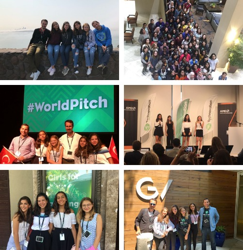

During the summer of 2018, our students Dafne Sarfati, Debi Ahitov, Irmak Kaşıkçı and Nil Kastro qualified to attend the Technovation final held in San Francisco. Our students were at the first 6 teams from 2200 teams in the Junior Division of Technovation.
Trees Expedite took a part in the finals of 2018 which held in Silicon Valley, San Francisco with the game, TapTap Trees, they developed through out the year. Our team Trees Expedite build an app that plants trees in real life on behalf of the players in order to solve the problem of air pollution and oxygen insufficiency by supporting afforestation. The app was a game targeting kids and teens as their audience in order to increase the yield of the time children spend with technological devices. To be able to plant trees our team also partnered with ÇEKÜL.
As a result of their efforts, they were awarded by a trip to Silicon Valley including the World Pitch conference. During the time they spent in the Silicon valley, they visited multiple companies including Google HQ, Google Ventures,Nvidia an NASA. Not only they visited the companies but they had the chance to meet with the staff working there and present their projects in front of them to get feedback.
The finalists were able to come together with a group formed by Nvidia, an AI company, members and they exchanged ideas about entrepreneurship, technology usage in our daily life. Lastly, they shared their experiences with the finalists to shape up their perspectives about being an entrepreneur researching/working in technology. As the finalists they also had the opportunity to present their ideas and project with Google Ventures team as World Pitch presentations approached. They got one last feedback on their projects and presentations from experienced members of Google Ventures who showed them details and tricks they never thought about before. The final presentations were at AMD’s (Advanced Micro Devices) headquarters. Teams were given a desk in the exhibit area to display their poster which they made during their trip with beforehand preparations, this exhibit was just an overview of their projects before the actual presentations began.
All the teams were given 5 minutes to deliver their idea and projects to the judges. The pride and excitement of being able to present their projects to people in senior positions in the world's leading companies gave the finalists an unrepeatable experience. Before the World Pitch come to an end our team presented their project with the poster they’ve displayed to participants and outside visitors. Receiving a huge interest for their ideas from people all over the world showed them that a small idea can make an impact not just on a small community. As the world pitch comes to an end our finalists returns home with the experiences they gained to continue their future plans with those experiences and knowledges shaping their ideas.